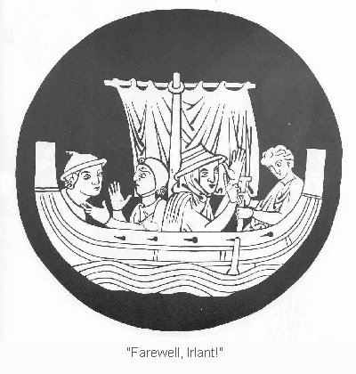

Now that this affair was settled,
the king announced in the palace
to all companions of the realm,
armed knights and court barons,
that this, their champion, was Tristan,
and continued with the story
in detail as he had heard it,
of why he had come to Irlant
and how he guaranteed
that he would make surety
with the presence of Marke's princes
to fulfull all the conditions
he had described previously.
The royal court of Irlant
heard this with great pleasure.
The council of barons declared
that this reconciliation
was very much to their liking,
since their long mutual enmity
caused only increasing damage.
The king commanded and required
that Tristan now confirm to him
all the stipulations
he had before promised.
Tristan, with his king's retainers,
undertook at once to do so.
They solemnly pledged then and there
the kingdom of Curnewal
to be Isolt's dowry,
and furthermore that she should be
queen of all Engelant.
With this Gurmun commended
Isolt by his own hand
to the hand of her foe Tristan. 11400
I say foe
with good reason:
she still felt only hatred for him.
Tristan held her hand in his
and spoke, Lord and King of Irlant,
we request, My Lady and I,
in her name and in mine,
that all those sent as hostage
from Curnewal and from Engelant,
be they knights or underage,
who properly and legally
should owe fealty to My Lady
as queen of those lands,
be now by you given freedom.
Gladly,
said the king. So be it.
It is furthermore my pleasure
that they all depart with you hence.
Many a heart rejoiced at this.
Tristan ordered another ship
fitted out to go with his
that would accommodate
both himself and Isolt
and others as he chose.
When this vessel stood ready,
Tristan prepared to depart.
At once all the exiles,
wherever they were found,
at court or in the provinces,
were summoned to the port.
It was during this time,
while Tristan and his fellows
were making preparations,
that Isolt, the wily queen,
set about compounding
in a small glass vessel
a virulent love-potation,
designed and intended
with exacting artifice
to have this certain power—
with whomever one should share it,
that person, involuntarily,
must one desire above all else,
and so the other in return.
To them a single death and life,
a single grief and joy was given.
The wise queen brought the drink
to Brangaene, and spoke softly:
Brangaene, you and I are kin.
Don't be troubled by what I say.
You must go with my daughter,
so please make up your mind to do it. 11450
Now listen, very carefully:
take the drink in this vessel,
keep it in your possession,
guard it above all else.
Make sure that on this earth
no one finds out about it.
Take every precaution
that no one should taste it.
Then comes the hard part:
when Isolt and Marke
have joined together for love,
give them this drink as wine,
and have them both partake of it.
By no means let anyone else
drink it with them. That's the trick.
And don't you touch it, either.
This draught causes love—
always remember that.
It's my Isolt I'm giving you,
with everything that means to me.
She is like my whole life.
Now she and I are in your hands,
as you hope for blessedness.
That is all I can say.
Oh, sweet lady,
said Brangaene,
if you and she want me to,
gladly will I go with her,
take care of her as best I can,
guard her life and her honor.
Tristan was making his farewells,
as were his men, here and there.
They would put out from Weisefort
very glad to be leaving.
The king and queen had followed them
with their own courtly attendants
all the way to the harbor
out of attachment to Isolt.
That as yet undreamed-of lover,
his ineluctable heartbreak,
the bright, wonderful Isolt,
remained at all times
by Tristan's side, weeping.
Her father and her mother both
endured with much suffering
the last few precious minutes.
Many an eye began to redden
and grow wet with hot tears.
Isolt was the pain in many a heart—
she was the cause of secret aches
in many breasts on that day. 11500
The eyes that could not help but weep
wept for their delight, Isolt.
Weeping spread everywhere.
Many hearts and many eyes
wept together in company,
publicly and in secret.
Isolt and yet again Isolt,
the Sun itself and her Dawn,
and the full Moon with them,
Brangaene the lovely,
now that they had to part,
the two of them from the one,
there was anguish and sorrow.
This loyal familiarity
was torn apart with great pain.
Queen Isolt kissed both of them
repeatedly, and then again.
When the liberated Cornish
and the Irish retinue
that would attend the ladies
had said their final goodbyes
and gone on board the vessels,
Tristan was the last to embark,
leading with him by the hand
the radiant young queen,
the blossom of all Irlant,
much downcast and unhappy.
Then both of them inclined landward
and bid the blessing of God
upon that country and its people.
They pushed off and set sail,
striking up with full voices
the repeated voyaging chorus,
in God's name we depart,
clearing the harbor for the sea.
For the ladies on the passage
Tristan had provided a cabin,
a special accomodation
affording privacy,
furnished for their comfort.
It was there that the queen
could stay with her maidservants,
where no man would intrude
except Tristan, occasionally.
At times he did enter there
and try to comfort the young queen,
who only sat, quietly weeping.
She wept and lamented
having left her homeland
where she knew the people, 11550
torn away from all her friends,
now at sea with total strangers,
she knew not why nor whither.

Tristan tried to console her,
as gently as he knew how.
Whatever the day or hour
when he came to share her sorrow,
he folded her in his arms
very gently and tenderly,
but always with the full respect
a subject pays his sovereign.
He saw to it in loyalty
that he was for this beauty
a comfort in her sorrow.
However, every time
he offered her his arm's support,
the lovely Isolt thought at once
about her uncle's death,
and always rebuked him:
Stop that, Captain, keep your distance.
Get your arm off of me.
You're certainly annoying.
Why do you try to touch me?
Ah, My Beauty, do I offend?
Ideed you do. I can't stand you.
Oh, my blessed one, why?
Why? You slew my uncle!
That's been atoned.
—No matter.
I hate and detest you still,
since if it hadn't been for you,
all my troubles would be over.
It was you—you alone
who caused me all this misery
with your tricks and machinations.
What evil force sent you to me
out of Curnewal to Irlant?
You have torn me from those
who have raised me from infancy,
to take me now I know not where.
I've been somehow traded off,
and don't know what's to become of me!
No, lovely Isolt, calm yourself.
You may yet prefer to be
a powerful queen abroad
than weak and deprived at home—
ease and honor in a foreign land
will surely seem a better lot
than a humble place in your own.
Enough,
she snapped, Captain Tristan,
whatever you say, I would gladly 11600
take a modest situation
with friendliness and peace of mind
over a hard and troublesome one
even with great power and riches.
You're talking sense,
said Tristan.
Now, if you can have riches
and contentment all together,
those two pleasant things
go far better with each other
than either of them by itself.
Now tell me this. Let's suppose
you had been forced to take
the seneschal as husband,
what would have happened then?
You'd have been overjoyed, I'm sure—
and this, now, is my thanks
that I came to your rescue
and got you out of his grasp?
It will be a long time
before you have my thanks for that—
all right, you did save me from him,
only to confuse me now
with so much misery
that in the long run I'd have rather
gone ahead and taken the steward
than fly off with you somewhere like this.
Worthless as he may have been,
after some time with me
he would have reformed for my sake.
Thus he could have proved, God knows,
that he really loved me.
What you say,
Tristan replied,
all sounds very strange to me.
A heart that goes against its nature
and suddenly converts to virtue—
that doesn't happen easily.
There is no one who believes
that bad can simply be made good.
You have no cause for grief, my beauty.
I shall give you very shortly
a king to be your lord,
and with him you will always have
wealth and virtue and honor,
the good life and happiness.
The ships continued on their course,
both having the wind fair
and prospects for a good voyage.
But now the company of ladies,
Isolt and her attendants,
found themselves unaccustomed 11650
to the ways of wind and water.
Very soon they were suffering
unfamiliar ill effects.
The sailing master Tristan ordered
a change of course toward land,
where they made a short layover.
When they landed at a harbor,
most of the ships' seamen
went ashore for diversion.
Tristan took this interval
to pay a respectful visit
to the splendid lady, still aboard.
When he had sat down with her,
making polite conversation
about their circumstances,
he called for refreshing drinks.
Other than the princess herself,
no one was there at that time
except for a few serving girls.
Said one of them, see, here is wine,
standing ready, in this cruet.
Alas, no, wine it was not,
although in some ways like it—
It was the enduring torment,
the heart's pain unending,
which at last killed them both.
But they knew nothing of this then.
They rose and went to the cabinet
where the draught in its vessel
had been carefully stowed away.
She bid Tristan, her master, drink,
but he, in turn, deferred to her.
She hesitated long, then drank,
and gave it to him, who drank also,
and both supposed they had drunk wine.
At that moment Brangaene came
and recognizing the empty phial
grasped at once the whole story.
Such was her fright and shock
that all her strength deserted her
and her color drained as though in death.
With heart already dead she went
and seized that ever-accursed flask,
carried it hence, and flung it
into the wildly raging sea.
Ah, alas,
she groaned, alas,
that ever I was born on earth!
How have I lost in woe
all my honor and faithfulness!
God's rue be eternal 11700
that ever I came on this voyage,
that death did not prevent me
from being sent with Isolt
on this damnable mission!
Alas, Tristan, alas, Isolt,
this drink means death for you both!